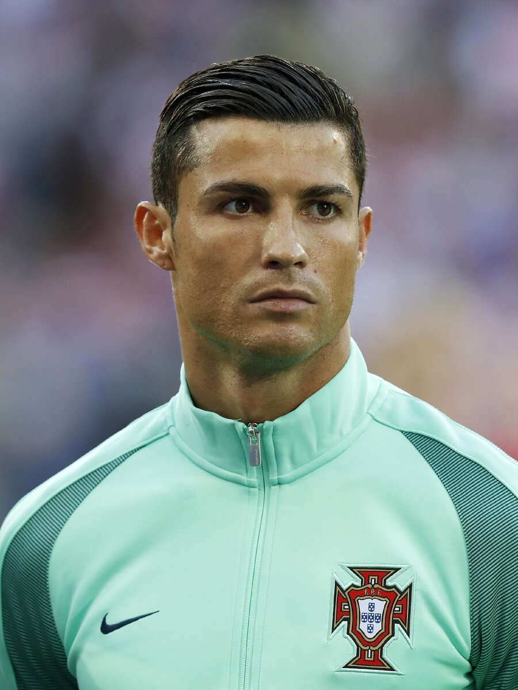

Андрес Иньеста;
Йохан Кройф;
Лионель Месси;
Пеле;
Зинедин Зидан;
Криштиану Роналду;
Рональдиньо;
Роналдо;
Диего Марадона;
Андреа Пирло.
Здесь думаю очевидно что спорно наличие Пирло на позиции лучшего игрока за всю историю.
Первое и второе место должны делить Месси, Роналду и Пеле.
Бесспорно все футболисты в топ – 10 талантливые, но ставить Месси на пятое спорно.
Не вините нас за данный список, ведь это определяли футбольные фанаты и болельщики со всего мира.
Если сравнивать топ 100 с другими рейтинговыми изданиями, такими как Marca и Guardian, то различия достаточно весомые.
Андрéс Инье́ста Луха́н (исп. Andrés Iniesta Luján)
Родился 11 мая 1984 года, Фуэнтеальбилья, Альбасете, Испания — испанский футболист, полузащитник и капитан японского клуба «Виссел Кобе».
Бывший вице-капитан национальной сборной Испании.
Один из самых выдающихся игроков в истории мирового футбола.
Самый титулованный испанский игрок в истории (37 титулов).
Хе́ндрик Йо́ханнес Кройф (нидерл. Hendrik Johannes Cruijff)
Родился 25 апреля 1947.
Амстердам — 24 марта 2016, Барселона, Испания — нидерландский футболист и тренер сборной Нидерландов, «Аякса» и «Барселоны».
Трёхкратный обладатель Золотого мяча, три раза выигрывал Кубок европейских чемпионов в качестве игрока и один раз в качестве тренера; широко признан одним из лучших футболистов XX века.
Всего за свою карьеру сыграл 752 матча, забил 425 мячей.
В январе 2017 года УЕФА, охарактеризовав Кройфа как «человека, заново открывшего „Барселону“», включило его в десятку тренеров, оказавших наибольшее влияние на развитие европейского футбола с момента основания организации в 1954 году.
В 2010 году награждён орденом ФИФА «За заслуги», наивысшей награды ФИФА, за весомый вклад в развитие футбола.
Лионе́ль Андре́с Ме́сси Куччитти́ни[a] (исп. Lionel Andrés Messi Cuccittini)
Родился 24 июня 1987, Росарио, Аргентина — аргентинский футболист, нападающий клуба «Пари Сен-Жермен», капитан сборной Аргентины.
Лучший бомбардир в истории чемпионата Испании, «Барселоны» и сборной Аргентины.
Признаётся одним из лучших футболистов всех времён.
Шестикратный обладатель «Золотого мяча» и «Золотой бутсы».
Воспитанник академии «Барселоны», в составе первой команды которой начал выступать с 17 лет.
Вместе с клубом выиграл десять титулов чемпиона Испании, четыре Лиги чемпионов УЕФА, семь Кубков Испании, восемь Суперкубков Испании, три Суперкубка Европы и три чемпионата мира среди клубов.
Э́дсон Ара́нтис ду Насиме́нту (порт.-браз. Edson Arantes do Nascimento)
Родился 21 октября или 23 октября 1940 года, Трес-Корасойнс, Минас-Жерайс, более известный как Пеле — бразильский футболист, нападающий (атакующий полузащитник.
Играл за клубы «Сантос» и «Нью-Йорк Космос». Провёл 92 матча и забил 77 голов в составе сборной Бразилии.
Пеле — единственный футболист в мире, три раза становившийся чемпионом мира как игрок (в 1958, 1962 и 1970 годах).
Участник четырёх чемпионатов мира. Лучший игрок чемпионата мира 1970. Лучший молодой игрок чемпионата мира 1958.
Футболист года в Южной Америке 1973 года.
Дважды член символических сборных чемпионатов мира.
Двукратный обладатель Межконтинентального кубка и Кубка Либертадорес, победитель Суперкубка межконтинентальных чемпионов, десятикратный чемпион штата Сан-Паулу, четырёхкратный победитель турнира Рио-Сан-Паулу в составе «Сантоса».
Зинедин Зидан - Французский футболист и тренер кабильского происхождения.
Родился: 23 июня 1972 г. (49 лет), Франция, Марсель.
Считается одним из величайших игроков в истории футбола.
Зидан начал свою карьеру в клубе «Канн» на позиции центрального полузащитника, позже выступал за «Бордо», но клубами, сделавшими француза известным на весь мир, считаются «Ювентус» и «Реал Мадрид», в составе которых француз выиграл двенадцать трофеев.
Криштиану Роналду - Португальский футболист, выступающий за английский клуб «Манчестер Юнайтед» и сборную Португалии, в которой является капитаном.
Лучший бомбардир в истории национальных сборных, а также испанского клуба «Реал Мадрид».
Считается одним из лучших футболистов всех времён.
Признан Португальской футбольной федерацией лучшим игроком в истории португальского футбола.
Первый футболист в истории, которому удалось выиграть английскую Премьер-лигу, испанскую Примеру и итальянскую Серию А.
Признавался лучшим игроком и бомбардиром сезона в каждом из этих турниров.

Рона́лду ди Аси́с Море́йра (порт.-браз. Ronaldo de Assis Moreira)
Родился 21 марта 1980, Порту-Алегри, Риу-Гранди-ду-Сул, Бразилия, более известный как Роналди́ньо (порт.-браз. Ronaldinho) и Роналди́ньо Гау́шо — бразильский футболист, выступал на позиции атакующего полузащитника и нападающего.
Обладатель «Золотого мяча» (2005), вручаемого лучшему футболисту Европы.
Лучший футболист мира по версии ФИФА в 2004 и 2005 годах.
Считался одним из лучших футболистов на пике своей карьеры.
Отличался невероятными дриблингами и креативной игрой.
Выступал за бразильские клубы «Гремио», «Фламенго», «Атлетико Минейро», «Флуминенсе», французский «Пари Сен-Жермен», испанскую «Барселону», итальянский «Милан», мексиканский «Керетаро».
Рона́лдо (порт.-браз. Ronaldo; полное имя — Рона́лду Луи́с Наза́риу ди Ли́ма) - бразильский футболист, выступавший на позиции нападающего. По мнению многих футбольных организаций, специалистов и спортсменов, является одним из лучших игроков в истории футбола. Двукратный чемпион мира, вице-чемпион мира, лучший футболист в истории чемпионатов мира по результатам исследований Castrol Index, лучший полевой футболист чемпионатов мира 1998 и 2002, лучший бомбардир чемпионата мира 2002, экс-рекордсмен чемпионатов мира по забитым мячам (в 2014 году его превзошёл Мирослав Клозе), рекордсмен чемпионатов мира по количеству матчей, в которых футболист забивал по крайней мере один гол, рекордсмен по числу голов, забитых во всех международных турнирах, трижды лучший футболист года по версиям ФИФА и журнала World Soccer, двукратный обладатель «Золотого мяча», обладатель «Золотой бутсы», включён в список ста величайших футболистов мира на 13-м месте по версии журнала «World Soccer» (1999 год), в список ФИФА 100, признан лучшим игроком десятилетия Серии А по версии Итальянской ассоциации футболистов (1998—2007), лучший игрок десятилетия по итогам голосования на портале goal.com (2000—2009)[17], один из двух игроков, наряду с Пеле, который выигрывал чемпионат мира в 17 лет, и один из трёх игроков, наряду с Ромарио и Джеффри Херстом, который оформлял хет-трик в финале международного турнира сборных. Родился 22 сентября 1976 года, Рио-де-Жанейро, Бразилия
Дие́го Арма́ндо Марадо́на (исп. Diego Armando Maradona) - аргентинский футболист, игравший на позициях атакующего полузащитника и нападающего.
30 октября 1960, Ланус — 25 ноября 2020, Дике-Лухан.
Выступал за клубы «Архентинос Хуниорс», «Бока Хуниорс», «Барселона», «Наполи», «Севилья» и «Ньюэллс Олд Бойз», а также сборную Аргентины.
Чемпион мира 1986 года, вице-чемпион мира 1990 года.
Чемпион мира среди молодёжных команд 1979 года.
Лучший игрок чемпионата мира 1986 года. Футболист года в Южной Америке 1979 и 1980 годов.
Дважды член символических сборных чемпионатов мира.
Чемпион Аргентины в составе клуба «Бока Хуниорс». Двукратный чемпион Италии в составе клуба «Наполи».
Андре́а Пи́рло (итал. Andrea Pirlo; род. 19 мая 1979, Флеро, Ломбардия, Италия) — итальянский тренер, раненее футболист игравший на позиции центрального полузащитника.
Один из лучших полузащитников в истории итальянского футбола.
Мастер исполнения навесов, дальних ударов и длинных пасов.
Во время игры отличался видением поля и точностью передач.
Пирло принадлежит рекорд Серии «A» по числу голов, забитых со штрафных — 28.